第2回 変数を完全理解 〜箱・データテーブル・選択ダイアログ〜
以降の全回の土台となる「変数」「データテーブル」「ユーザー入力ダイアログ」を、PC スキルゼロでも腹落ちさせる回です。
最終演習 Main で使う「データテーブル直書き → 列リスト化 → 選択ダイアログ」のパターンをここで完成させます。
事前準備
- 第1回 環境セットアップ が完了している
- PAD のフロー編集画面で「新規フロー作成」ができる
A. 変数の基本
変数とは何か／なぜ使うのか／命名／データ型を一気に押さえるA-1. 変数 ＝ データを入れておく「箱」
変数は、数字や文字などのデータを一時的に保存しておく場所です。箱に名前をつけて、中に好きなデータを入れておけます。使い方は、たったこの3ステップです。
%箱の名前% で取り出す左の箱に好きな名前を入れて、右のフローを実行してみてください。フロー側は1文字も書き換えません。
PAD では
%変数名% と書くことで、箱の中身をプログラムの中で使えます。
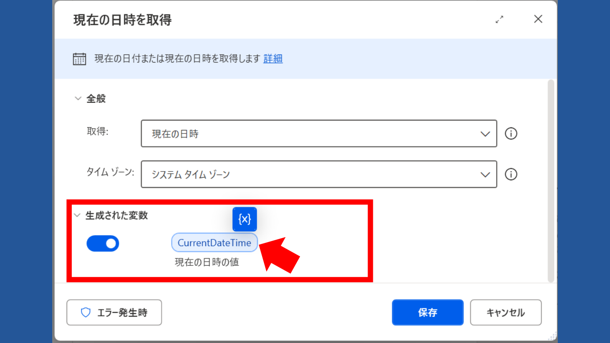
A-2. なぜ変数を使うの？
「決まった値をそのまま書けばいいのでは？」と思うかもしれません。ところが同じ値を何度も使うフローや、毎回中身が変わるフローでは、変数を使わないとあっという間に作り直し・ミスの温床になります。下のシミュレーターで、担当者が交代したときに何が起きるかを実際に体験してみましょう。
「担当者の名前」を3つのアクションで使っている、同じ内容のフローが2本あります。交代ボタンを押して、それぞれのフローがどうなるか見比べてください。
😰 直書きフロー
😊 変数フロー
%担当者名% を参照します。変数を使うと、こんな「うれしいこと」が起きます
上の例のとおり、何十か所に散らばった値でも、変数の中身を1回書き換えるだけで全部に反映されます。「直し忘れ」という一番多いミスがなくなります。
担当者名・スタッフ名・部署などを変数にしておけば、1本のフローを全員ぶんに使い回せます。スタッフ700名のプロフィールシートを作るとき、名前を直書きしていたら700本フローが必要ですが、変数なら1本で済みます。
現在日時・ユーザーが選んだ部署・Web から取ってきたスタッフ情報など、動かすまで中身が決まらない値は、そもそも直書きできません。こうした値は必ず変数に入れて扱います。次の A-④ で出てくる「ユーザーに選ばせる → 選ばれた値を変数に入れる」がまさにこれです。
実際には、こんな「箱」が活躍します（最終演習より）
→「20260705_1430」を作成
A-3. 変数には「わかりやすい名前」をつけよう
| 何を入れる箱？ | NG な名前 | OK な名前 |
|---|---|---|
| 社員の名前 | NGa / data1 | OK社員名 / EmployeeName |
| 今月の売上合計 | NGx / num | OK今月売上合計 / TotalSales |
| 処理が終わったかどうか | NGflag / b | OK処理完了フラグ / IsDone |
-
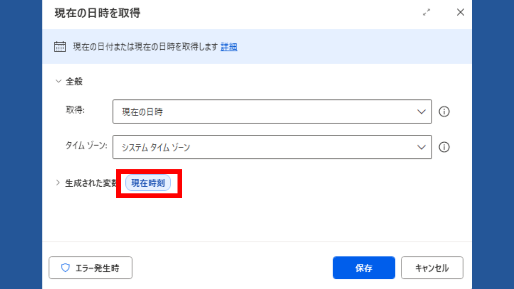
「現在の日時を取得」アクション設定画面（取得＝現在の日時／生成変数を 現在時刻に変更）「現在の日時を取得」で日時を変数に入れる アクションペインの「日時」カテゴリから「現在の日時を取得」を配置します。実行すると、いま現在の日時が自動で変数に格納されます。- 生成される変数名は初期状態だと
CurrentDateTimeのような英語名です。分かりやすく現在時刻に変更しておきましょう（変数名は日本語でも OK）。
- 生成される変数名は初期状態だと
-
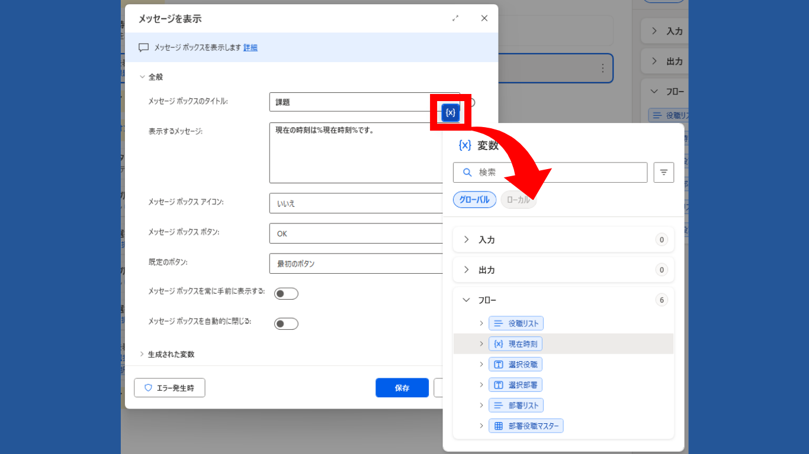
「メッセージを表示する」アクション設定画面（表示するメッセージ＝現在の日時は %現在時刻% です） 「メッセージを表示する」で変数の中身を出す 続けて「メッセージを表示する」アクションを置き、「表示するメッセージ」欄に 「現在の日時は 〜 です」 という文を入れます。途中に変数現在時刻を埋め込むには、2 つのやり方があります。- ① 変数選択アイコンから選ぶ（おすすめ）：テキスト入力欄をクリックすると、欄の右側に青い変数選択アイコン（{x}）が出てきます。これをクリックすると、これまでに生成した変数が一覧リストで表示されるので、その中から
現在時刻を選ぶだけで%現在時刻%が自動で挿入されます。 - ② 直接入力：変数名を覚えていれば、
%現在時刻%とそのままキーボードで打ち込んでも OK です。
現在の日時は %現在時刻% です%現在時刻%の部分が、ステップ 1 で取得した日時に置き換わって表示されます。これが「変数を使う（参照する）」ということです。 - ① 変数選択アイコンから選ぶ（おすすめ）：テキスト入力欄をクリックすると、欄の右側に青い変数選択アイコン（{x}）が出てきます。これをクリックすると、これまでに生成した変数が一覧リストで表示されるので、その中から
A-4. 変数の「型（データ型）」の種類を知ろう
変数の「箱」には、入れられる値の種類＝データ型があります。PAD では型を自分で宣言する必要はなく、代入した値から自動的に型が決まる仕組みです。
| 型 | 何が入る？ | 例 |
|---|---|---|
| テキスト値 (Text) | 文字列。氏名・メッセージ・ファイル名など、文字なら何でも。 | "山田 太郎" / "こんにちは" |
| 数値 (Number) | 整数・小数。四則演算（+ − × ÷）ができる。 | 100 / 3.14 |
| 日時 (DateTime) | 日付＋時刻。「現在の日時を取得」アクションで生成される。フォーマット変換で文字列化できる。 | 2026/05/20 14:30:00 |
| リスト (List) | 同じ種類の値を一列に並べたもの。複数値の集合 | ['営業部','総務部','開発部'] |
| データテーブル (DataTable) | 行×列の表形式データ。Excel やスクレイピング結果の格納先。次セクション 2-B で詳しく扱う。複数値の集合 | スタッフ一覧の表など |
「テキスト値」「数値」「日時」の3つの型が PAD の変数ペインでどう見えるかは、下のスクリーンショットで確認できます。
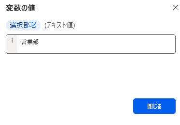
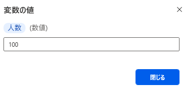
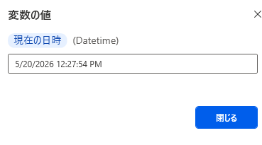
※ リスト型とデータテーブル型（複数値の集合）は、次の 2-B-① セクションで詳しく扱います。
📚 公式リファレンス：Power Automate Desktop の変数データ型一覧（Microsoft Learn）
B. リストとデータテーブル
複数の値を一括で扱う変数の仕組みと取り出し方B-1. リスト型 と データテーブル型 〜複数の値を一括で扱う変数〜
値が2つ以上ある場合は、リスト型またはデータテーブル型の変数に格納されます。スクレイピング結果や Excel から表全体を抽出したときも、これらの型に入ります。行と列を持つ表形式のデータを、PAD の中で自在に操作できます。
- 作成・読み込み：スクレイピング結果の格納／Excel ワークシートからの読み込み／「新しいデータテーブルを作成」アクションで手書きで直接作成することも可能
- 行の追加：「データテーブルに行を挿入」アクションで1行ずつ追加
- フィルタ・検索：「フィルターデータテーブル」で条件に合う行だけ抽出
- 書き出し：「Excel ワークシートに書き込む」で DataTable をシートに反映
- 列の取り出し：「データテーブル列をリストに取得」アクションで特定の1列をリストとして取り出す（例：「部署」列だけをリスト化して選択ダイアログに渡す）
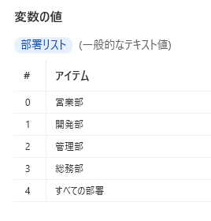
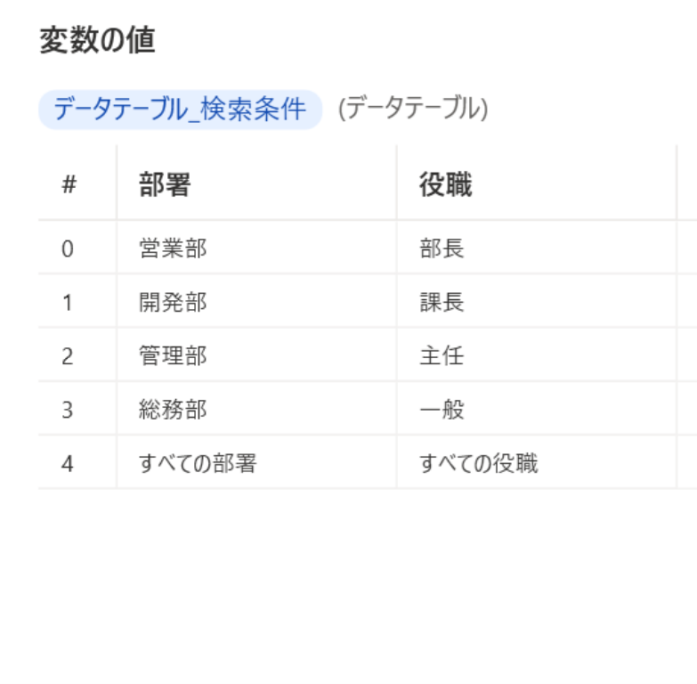
B-2. DataTable の値を取り出す（インタラクティブデモ）
DataTable の特定の値を取り出すには、変数名の後ろに [] を使って「行番号」と「列番号 or 列名」を指定します。DataTable の添字は 0 から数え始めることに注意してください。
例えば、下の表のように変数名 スタッフリスト というデータテーブルにスタッフ情報が格納されているとします。この中で 田中 一郎さん を抜き出したい場合、%スタッフリスト[2][1]% または %スタッフリスト[2]['氏名']% と記載します。
%現在の行['氏名']%）は、列の順番が変わってもフローが壊れません。インデックスだけ（%現在の行[0]%）はシンプルですが、サイト改修に弱いので注意。
表のセルをクリックすると、PAD でその値を取り出すときの書き方が表示されます。
| 0 | 1 | 2 | 3 | 4 | |
|---|---|---|---|---|---|
| ID | 氏名 | 部署 | 役職 | 入社日 |
※ 一番左の数字列・一番上の数字行は「何行目／何列目か」を見るための補助表示です（DataTable 本体には含まれません）。実際のデータは ID 列〜入社日 列 の範囲です。
C. 直書きデータテーブル ＋ 列リスト化 ＋ 選択ダイアログ（最終演習 Main の縮小版）
最終演習の Main では、「部署 × 役職」マスターをフローに直書きし、列を取り出してユーザーに選ばせる仕組みを作ります。下記の手順で順番に作っていきましょう。
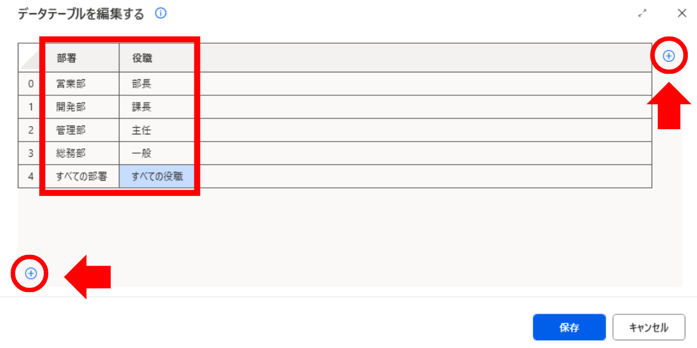
1新しいデータテーブルを作成
アクションペインから 「変数 → 新しいデータテーブルを作成」 をワークスペースにドラッグ。設定画面で、下の表のとおり ヘッダ「部署」「役職」 を持つデータテーブルを直書きで作成してください。
| 部署 | 役職 |
|---|---|
| 営業部 | 部長 |
| 開発部 | 課長 |
| 管理部 | 主任 |
| 総務部 | 一般 |
| すべての部署 | すべての役職 |
生成される変数名は 部署役職マスター などに変更しておくと、後の参照で迷いません。
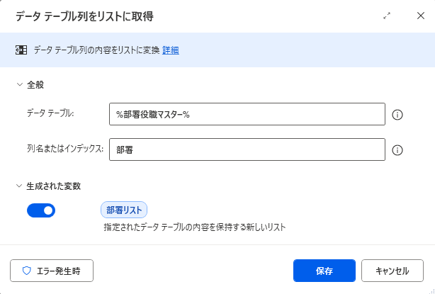
2データテーブル列をリストに取得
アクション 「変数 → データテーブル列をリストに取得」 で、手順1で作ったデータテーブルから 「部署」列だけ を取り出してリスト化します。
出力変数は 部署リスト のように、リストであることが分かる名前にしておきます。
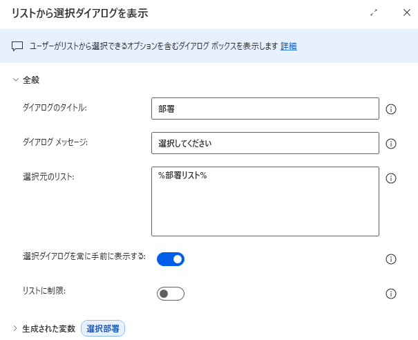
3リストから選択ダイアログを表示
アクション 「メッセージボックス → リストから選択ダイアログを表示」 に %部署リスト% を渡すと、実行時にユーザーへ部署選択ダイアログが表示されます。
選ばれた値は %選択部署% に格納され、後続アクションで自由に使えます。同じ流れで「役職」も選ばせて %選択役職% に格納しましょう。
解答例 / 完成フローテキスト
本回のハンズオン課題の完成フローテキストをダウンロードして、PAD 編集画面に貼り付けてください。
⬇️ lesson-2.txt をダウンロードよくある詰まりと FAQ
%変数名% のように半角 % で囲む必要があります。全角 ％ になっていないか確認してください。